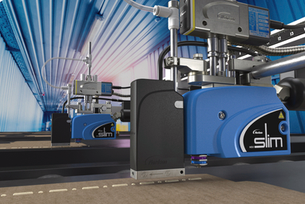
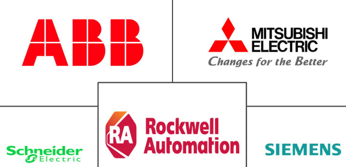
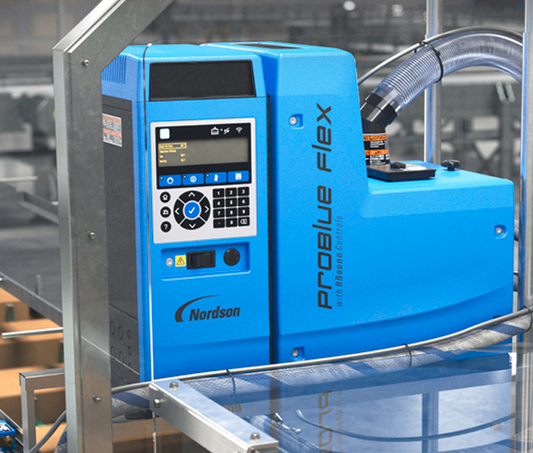
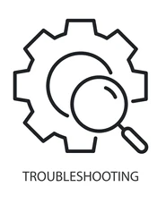
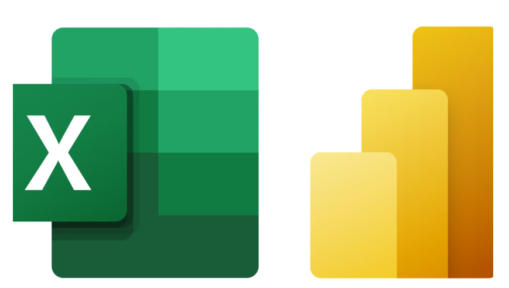
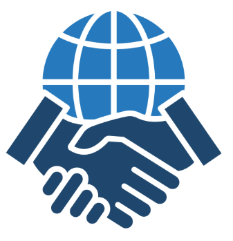

01
디스펜싱 기술영업
Dispensing Technical Sales
고객 공정 분석, 장비·시스템 제안, 기술 검토
Application assessment, system proposals and technical review
고윤욱 | 산업용 디스펜싱 시스템의 기술영업과 현장 엔지니어링, PLC 자동제어 경험을 바탕으로 고객의 과제를 해결합니다.
Yoonwook Ko | Technical sales and field engineering professional with hands-on experience in industrial dispensing systems and PLC automation.
기술영업과 현장 엔지니어링을 연결하며 고객의 공정 개선과 안정적인 설비 운영을 지원합니다.
Bridging technical sales and field engineering to support process improvements and reliable equipment operations.
약 6년간의 기술영업 경험을 바탕으로 다양한 산업 분야에서 디스펜싱 시스템 전문성을 쌓아왔습니다. 미국 본사의 첨단 디스펜싱 장비를 국내 고객 환경에 맞게 제안하고 도입을 지원하며, 식음료·제약 분야의 주요 기업들과 긴밀히 협업해 왔습니다. 특히 LG Energy Solution과 삼성SDI의 이차전지 Cell Stacking 공정 관련 기술영업을 수행하고, 농심·롯데칠성·셀트리온 등 식음료 및 제약 기업의 패키징 디스펜싱 시스템 도입 프로젝트를 주도했습니다.
With approximately six years of technical sales experience, I have developed expertise in dispensing systems across diverse industries. I have introduced and supported advanced dispensing equipment from a U.S.-headquartered manufacturer for customers in Korea, collaborating closely with leading food, beverage and pharmaceutical companies. My experience includes technical sales for battery cell stacking applications at LG Energy Solution and Samsung SDI, as well as leading packaging dispensing system implementation projects for Nongshim, Lotte Chilsung and Celltrion.
고객별 요구사항에 맞춘 장비 트러블슈팅과 유지보수, PLC와 장비 간 산업용 통신 연동 등 폭넓은 기술지원을 제공합니다. 신규 장비의 현장 설치부터 시운전·검증 및 운영 안정화까지 전 과정을 직접 관리하며, 현장 중심의 문제 해결 역량을 발전시켜 왔습니다. 축적된 실무 경험과 체계적인 기술영업 역량을 바탕으로 고객 가치 향상과 장기적인 협력 관계 구축에 기여하고자 합니다.
I provide hands-on technical support tailored to each customer's requirements, including equipment troubleshooting, preventive maintenance and industrial communication integration between PLCs and equipment. I manage the full lifecycle from on-site installation through commissioning, validation and operational stabilization. By combining field-based problem solving with a structured technical sales approach, I aim to create lasting customer value and build long-term partnerships.





주요 산업 F&B(식음료) · 제약 · 생활용품 · 배터리
Industries F&B · Pharmaceuticals · Consumer Goods · Batteries
기술영업과 자동제어, 현장 엔지니어링을 아우르는 실무 역량입니다.
Hands-on capabilities across technical sales, automation and field engineering.
고객 공정 분석, 장비·시스템 제안, 기술 검토
Application assessment, system proposals and technical review
신규 장비 설치, 시운전, 검증 및 안정화
Equipment installation, commissioning, validation and stabilization
Siemens·Mitsubishi·LS PLC, CC-Link·PROFINET·Ethernet
Siemens, Mitsubishi and LS PLCs; CC-Link, PROFINET and Ethernet
전기 도면, 센서, 모터·펌프 진단 및 유지보수
Electrical drawings, sensors, motors, pumps and maintenance
Excel·Power BI 기반 데이터 가공 및 시각화
Data processing and visualization with Excel and Power BI

해외 기술팀과 영문 이메일·화상회의를 통한 문제 해결
Technical coordination via English email and video meetings
자동제어 기반의 기술 경험을 디스펜싱 시스템 기술영업과 고객 지원으로 발전시켜 왔습니다.
A career built on automation fundamentals and expanded into dispensing system sales and support.
이력서에 기재된 실제 수행 경험을 바탕으로 정리했습니다. 고객사 및 설비의 민감한 세부 정보는 제외했습니다.
Cases adapted from documented work experience, without confidential customer or equipment details.
상황 신규 시스템 시운전 중 PLC 통신 지연과 모터 과부하 발생
대응 배선·센서 및 펌프 커플링 점검, PLC 로직 디버깅, 해외 기술팀과 데이터 로그 공유
결과 커플링 마모와 통신 문제를 해결하고 예정된 기한 내 시운전 완료
Challenge PLC communication delays and motor overload during commissioning
Approach Checked wiring, sensors and pump coupling; debugged PLC logic and reviewed logs with overseas engineers
Outcome Resolved coupling wear and communication issues; completed commissioning on schedule
과제 신규 e-commerce 물류 포장 분야에서 기술적 위험과 가격 중심의 고객 우려 대응
접근 사전 시운전 검증 조건 강화, 전력·기계적 간섭 검토, 공정 효율 및 ROI 자료를 활용한 제안
의의 고객 요구와 현장 제약을 반영한 데이터 기반 기술영업 접근법 구축
Challenge Technical uncertainty and price-focused concerns in a new e-commerce packaging application
Approach Strengthened pre-commissioning checks, reviewed power and mechanical constraints, and presented process efficiency and ROI information
Value Developed a customer-specific, data-informed proposal approach
역할 초기 파일럿 설비의 PLC 프로그램 공동 개발
수행 Siemens PLC를 활용한 전장 도면, HMI, 제어 프로그램 설계 및 시운전 참여
경험 설계부터 시운전까지 자동제어 시스템의 전 과정을 경험
Role Co-developed PLC software for a pilot gas cabinet
Work Participated in electrical design, HMI, Siemens PLC programming and commissioning
Experience Gained end-to-end controls engineering experience
배경 고객에게 장비 문제와 개선 방향을 명확하게 설명할 필요
실행 Power BI 및 Excel을 학습하고 현장 장비 데이터를 가공·시각화, 해외 기술 자료와 엔지니어 협업 활용
효과 기술 이슈 전달력과 문제 대응 효율 향상
Need Communicate equipment issues and recommendations more clearly
Action Learned Excel and Power BI to process and visualize field data, supported by global technical resources
Impact Improved clarity of technical communication and issue response
기술영업, 현장 엔지니어링 및 협업 기회에 대해 편하게 연락해 주세요.
For opportunities or questions about my experience, please use the contact details below.